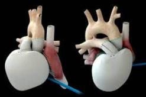

| Tecnica/ | |
| Por el momento, no es un sistema definitivo sino que sirve de fase de tránsito para que el paciente mejore su situación hasta que pueda darse un trasplante con un corazón humano. Consiste en un " corazón de plástico" que, junto a una consola que programa las funciones y sirve de motor de bombeo. |  |